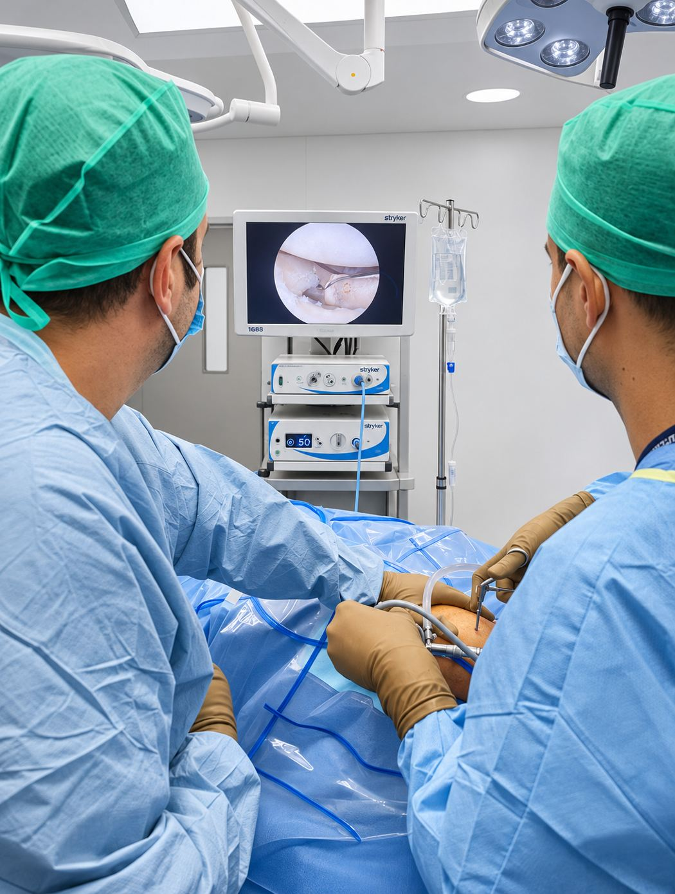
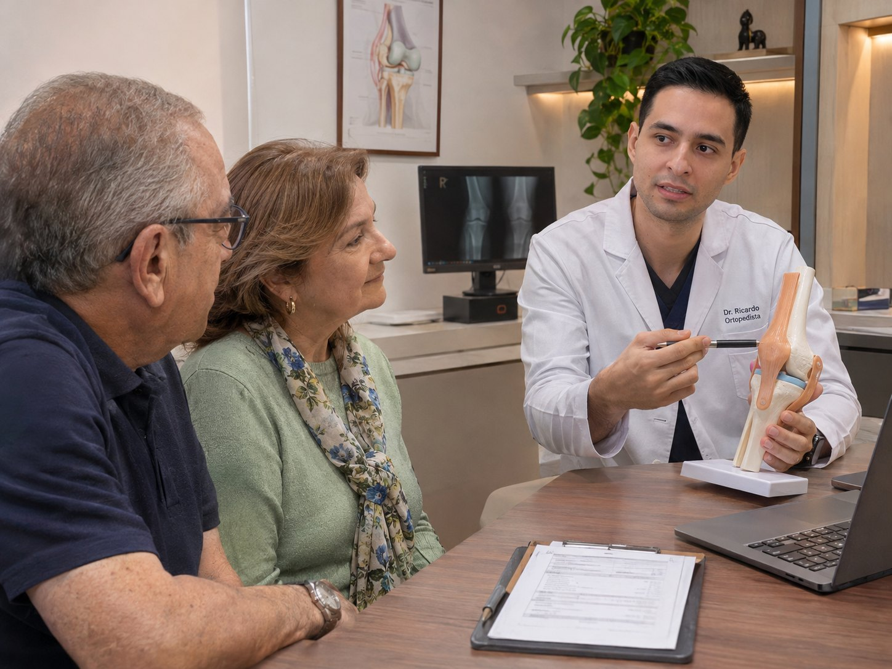

Su salud merece tiempo y atención.
Cada caso es diferente. Una valoración cuidadosa permite comprender el problema y considerar las opciones de tratamiento.
¿Qué le trae a consulta?
Puede comenzar por lo que siente o por las dudas que tenga. No necesita conocer términos médicos.
Me duele el hombro
Dolor o dificultad para mover el brazo en sus actividades cotidianas.
Explorar hombro ↗Me lastimé la rodilla
Una lesión reciente, molestias al caminar o problemas al practicar deporte.
Explorar rodilla ↗Tuve una lesión deportiva
Quiero entender qué preguntas llevar a mi valoración después de una lesión.
Orientación inicial ↗Ya tengo un diagnóstico
Quiero conocer al especialista y comprender cómo prepararme para una valoración.
Preparar mi consulta ↗Dr. José Ricardo González Rubio.
Una buena decisión médica comienza con una valoración cuidadosa: escuchar lo que le preocupa, entender cómo afecta su vida diaria y explicarle con claridad las opciones para su caso.
Conozca su trayectoria ↗Hombro y rodilla.
Evaluación y tratamiento de lesiones y padecimientos articulares, considerando las alternativas de manejo adecuadas para cada paciente.
Hombro
Valoración especializada de lesiones del manguito rotador, problemas de estabilidad y alteraciones de la movilidad. Cuando está indicado, el tratamiento puede incluir técnicas artroscópicas.
Conocer los tratamientos de hombro ↗Rodilla
Evaluación de lesiones de meniscos, ligamentos y otros problemas articulares. Según el caso, se consideran tratamientos conservadores o procedimientos artroscópicos cuando son necesarios.
Conocer los tratamientos de rodilla ↗
Formación especializada en artroscopía de hombro y rodilla.
La artroscopía permite observar y tratar determinadas lesiones articulares mediante pequeñas incisiones. El Dr. José Ricardo González Rubio cuenta con formación especializada en esta técnica, cuya indicación depende de una valoración individual.
La cirugía no es siempre necesaria: cada decisión parte del diagnóstico y de las alternativas disponibles.
Primero comprender. Después decidir.
Una valoración cuidadosa comienza por escuchar su historia, explorar el problema y explicar con claridad las alternativas de tratamiento.

Cómo solicitar una valoración.
Conozca qué esperar de una valoración y cómo preparar su visita.